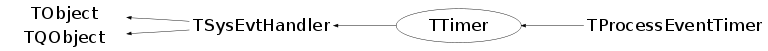

class TTimer: public TSysEvtHandler
TTimer Handles synchronous and a-synchronous timer events. 1. synchronous timer is registered into TSystem and is processed within the standard ROOT event-loop. 2. asynchronous timer is passed to the operating system which sends an external signal to ROOT and thus interrupts its event-loop. You can use this class in one of the following ways: - Sub-class TTimer and override the Notify() method. - Re-implement the TObject::HandleTimer() method in your class and pass a pointer to this object to timer, see the SetObject() method. - Pass an interpreter command to timer, see SetCommand() method. - Create a TTimer, connect its Timeout() signal to the appropriate methods. Then when the time is up it will emit a Timeout() signal and call connected slots. Minimum timeout interval is defined in TSystem::ESysConstants as kItimerResolution (currently 10 ms). Signal/slots example: TTimer *timer = new TTimer(); timer->Connect("Timeout()", "myObjectClassName", myObject, "TimerDone()"); timer->Start(2000, kTRUE); // 2 seconds single-shot To emit the Timeout signal repeadetly with minimum timeout: timer->Start(0, kFALSE);
Function Members (Methods)
public:
| TTimer(Long_t milliSec = 0, Bool_t mode = kTRUE) | |
| TTimer(TObject* obj, Long_t milliSec, Bool_t mode = kTRUE) | |
| TTimer(const char* command, Long_t milliSec, Bool_t mode = kTRUE) | |
| virtual | ~TTimer() |
| void | TObject::AbstractMethod(const char* method) const |
| void | TSysEvtHandler::Activate() |
| virtual void | TSysEvtHandler::Activated()SIGNAL |
| virtual void | Add() |
| virtual void | TSysEvtHandler::Added()SIGNAL |
| virtual void | TObject::AppendPad(Option_t* option = "") |
| static Bool_t | TQObject::AreAllSignalsBlocked() |
| Bool_t | TQObject::AreSignalsBlocked() const |
| static Bool_t | TQObject::BlockAllSignals(Bool_t b) |
| Bool_t | TQObject::BlockSignals(Bool_t b) |
| virtual void | TObject::Browse(TBrowser* b) |
| virtual void | TQObject::ChangedBy(const char* method)SIGNAL |
| Bool_t | CheckTimer(const TTime& now) |
| static TClass* | Class() |
| virtual const char* | TObject::ClassName() const |
| virtual void | TObject::Clear(Option_t* = "") |
| virtual TObject* | TObject::Clone(const char* newname = "") const |
| void | TQObject::CollectClassSignalLists(TList& list, TClass* cls) |
| virtual Int_t | TObject::Compare(const TObject* obj) const |
| Bool_t | TQObject::Connect(const char* signal, const char* receiver_class, void* receiver, const char* slot) |
| static Bool_t | TQObject::Connect(TQObject* sender, const char* signal, const char* receiver_class, void* receiver, const char* slot) |
| static Bool_t | TQObject::Connect(const char* sender_class, const char* signal, const char* receiver_class, void* receiver, const char* slot) |
| virtual void | TQObject::Connected(const char*) |
| virtual void | TObject::Copy(TObject& object) const |
| void | TSysEvtHandler::DeActivate() |
| virtual void | TSysEvtHandler::DeActivated()SIGNAL |
| virtual void | TObject::Delete(Option_t* option = "")MENU |
| virtual void | TQObject::Destroyed()SIGNAL |
| Bool_t | TQObject::Disconnect(const char* signal = 0, void* receiver = 0, const char* slot = 0) |
| static Bool_t | TQObject::Disconnect(TQObject* sender, const char* signal = 0, void* receiver = 0, const char* slot = 0) |
| static Bool_t | TQObject::Disconnect(const char* class_name, const char* signal, void* receiver = 0, const char* slot = 0) |
| virtual void | TQObject::Disconnected(const char*) |
| virtual Int_t | TObject::DistancetoPrimitive(Int_t px, Int_t py) |
| virtual void | TObject::Draw(Option_t* option = "") |
| virtual void | TObject::DrawClass() constMENU |
| virtual TObject* | TObject::DrawClone(Option_t* option = "") constMENU |
| virtual void | TObject::Dump() constMENU |
| void | TQObject::Emit(const char* signal) |
| void | TQObject::Emit(const char* signal, Long_t* paramArr) |
| void | TQObject::Emit(const char* signal, const char* params) |
| void | TQObject::Emit(const char* signal, Double_t param) |
| void | TQObject::Emit(const char* signal, Long_t param) |
| void | TQObject::Emit(const char* signal, Long64_t param) |
| void | TQObject::Emit(const char* signal, Bool_t param) |
| void | TQObject::Emit(const char* signal, Char_t param) |
| void | TQObject::Emit(const char* signal, UChar_t param) |
| void | TQObject::Emit(const char* signal, Short_t param) |
| void | TQObject::Emit(const char* signal, UShort_t param) |
| void | TQObject::Emit(const char* signal, Int_t param) |
| void | TQObject::Emit(const char* signal, UInt_t param) |
| void | TQObject::Emit(const char* signal, ULong_t param) |
| void | TQObject::Emit(const char* signal, ULong64_t param) |
| void | TQObject::Emit(const char* signal, Float_t param) |
| void | TQObject::EmitVA(const char* signal, Int_t nargs) |
| void | TQObject::EmitVA(const char* signal, Int_t nargs, va_list va) |
| virtual void | TObject::Error(const char* method, const char* msgfmt) const |
| virtual void | TObject::Execute(const char* method, const char* params, Int_t* error = 0) |
| virtual void | TObject::Execute(TMethod* method, TObjArray* params, Int_t* error = 0) |
| virtual void | TObject::ExecuteEvent(Int_t event, Int_t px, Int_t py) |
| virtual void | TObject::Fatal(const char* method, const char* msgfmt) const |
| virtual TObject* | TObject::FindObject(const char* name) const |
| virtual TObject* | TObject::FindObject(const TObject* obj) const |
| TTime | GetAbsTime() const |
| const char* | GetCommand() const |
| virtual Option_t* | TObject::GetDrawOption() const |
| static Long_t | TObject::GetDtorOnly() |
| virtual const char* | TObject::GetIconName() const |
| TList* | TQObject::GetListOfClassSignals() const |
| TList* | TQObject::GetListOfConnections() const |
| TList* | TQObject::GetListOfSignals() const |
| virtual const char* | TObject::GetName() const |
| TObject* | GetObject() |
| virtual char* | TObject::GetObjectInfo(Int_t px, Int_t py) const |
| static Bool_t | TObject::GetObjectStat() |
| virtual Option_t* | TObject::GetOption() const |
| TTime | GetTime() const |
| UInt_t | GetTimerID() |
| virtual const char* | TObject::GetTitle() const |
| virtual UInt_t | TObject::GetUniqueID() const |
| virtual Bool_t | TObject::HandleTimer(TTimer* timer) |
| virtual Bool_t | TQObject::HasConnection(const char* signal_name) const |
| virtual ULong_t | TObject::Hash() const |
| Bool_t | HasTimedOut() const |
| virtual void | TQObject::HighPriority(const char* signal_name, const char* slot_name = 0) |
| virtual void | TObject::Info(const char* method, const char* msgfmt) const |
| virtual Bool_t | TObject::InheritsFrom(const char* classname) const |
| virtual Bool_t | TObject::InheritsFrom(const TClass* cl) const |
| virtual void | TObject::Inspect() constMENU |
| void | TObject::InvertBit(UInt_t f) |
| virtual TClass* | IsA() const |
| Bool_t | TSysEvtHandler::IsActive() const |
| Bool_t | IsAsync() const |
| virtual Bool_t | TObject::IsEqual(const TObject* obj) const |
| virtual Bool_t | TObject::IsFolder() const |
| Bool_t | IsInterruptingSyscalls() const |
| Bool_t | TObject::IsOnHeap() const |
| virtual Bool_t | TObject::IsSortable() const |
| Bool_t | IsSync() const |
| Bool_t | TObject::IsZombie() const |
| static void | TQObject::LoadRQ_OBJECT() |
| virtual void | TQObject::LowPriority(const char* signal_name, const char* slot_name = 0) |
| virtual void | TObject::ls(Option_t* option = "") const |
| void | TObject::MayNotUse(const char* method) const |
| virtual void | TQObject::Message(const char* msg)SIGNAL |
| virtual void | TSysEvtHandler::Notified()SIGNAL |
| virtual Bool_t | Notify() |
| virtual Int_t | TQObject::NumberOfConnections() const |
| virtual Int_t | TQObject::NumberOfSignals() const |
| void | TObject::Obsolete(const char* method, const char* asOfVers, const char* removedFromVers) const |
| static void | TObject::operator delete(void* ptr) |
| static void | TObject::operator delete(void* ptr, void* vp) |
| static void | TObject::operator delete[](void* ptr) |
| static void | TObject::operator delete[](void* ptr, void* vp) |
| void* | TObject::operator new(size_t sz) |
| void* | TObject::operator new(size_t sz, void* vp) |
| void* | TObject::operator new[](size_t sz) |
| void* | TObject::operator new[](size_t sz, void* vp) |
| virtual void | TObject::Paint(Option_t* option = "") |
| virtual void | TObject::Pop() |
| virtual void | TObject::Print(Option_t* option = "") const |
| virtual Int_t | TObject::Read(const char* name) |
| virtual void | TObject::RecursiveRemove(TObject* obj) |
| virtual void | Remove() |
| virtual void | TSysEvtHandler::Removed()SIGNAL |
| void | Reset() |
| void | TObject::ResetBit(UInt_t f) |
| virtual void | TObject::SaveAs(const char* filename = "", Option_t* option = "") constMENU |
| virtual void | TObject::SavePrimitive(ostream& out, Option_t* option = "") |
| void | TObject::SetBit(UInt_t f) |
| void | TObject::SetBit(UInt_t f, Bool_t set) |
| void | SetCommand(const char* command) |
| virtual void | TObject::SetDrawOption(Option_t* option = "")MENU |
| static void | TObject::SetDtorOnly(void* obj) |
| void | SetInterruptSyscalls(Bool_t set = kTRUE) |
| void | SetObject(TObject* object) |
| static void | TObject::SetObjectStat(Bool_t stat) |
| void | SetTime(Long_t milliSec) |
| void | SetTimerID(UInt_t id = 0) |
| virtual void | TObject::SetUniqueID(UInt_t uid) |
| virtual void | ShowMembers(TMemberInspector& insp) |
| static void | SingleShot(Int_t milliSec, const char* receiver_class, void* receiver, const char* method) |
| virtual void | Start(Long_t milliSec = -1, Bool_t singleShot = kFALSE) |
| virtual void | Stop() |
| virtual void | Streamer(TBuffer& b) |
| void | StreamerNVirtual(TBuffer& b) |
| virtual void | TObject::SysError(const char* method, const char* msgfmt) const |
| Bool_t | TObject::TestBit(UInt_t f) const |
| Int_t | TObject::TestBits(UInt_t f) const |
| virtual void | Timeout()SIGNAL |
| virtual void | TurnOff()SIGNAL |
| virtual void | TurnOn()SIGNAL |
| virtual void | TObject::UseCurrentStyle() |
| virtual void | TObject::Warning(const char* method, const char* msgfmt) const |
| virtual Int_t | TObject::Write(const char* name = 0, Int_t option = 0, Int_t bufsize = 0) |
| virtual Int_t | TObject::Write(const char* name = 0, Int_t option = 0, Int_t bufsize = 0) const |
protected:
| static Int_t | TQObject::CheckConnectArgs(TQObject* sender, TClass* sender_class, const char* signal, TClass* receiver_class, const char* slot) |
| static Bool_t | TQObject::ConnectToClass(TQObject* sender, const char* signal, TClass* receiver_class, void* receiver, const char* slot) |
| static Bool_t | TQObject::ConnectToClass(const char* sender_class, const char* signal, TClass* receiver_class, void* receiver, const char* slot) |
| virtual void | TObject::DoError(int level, const char* location, const char* fmt, va_list va) const |
| virtual void* | TQObject::GetSender() |
| virtual const char* | TQObject::GetSenderClassName() const |
| void | TObject::MakeZombie() |
Data Members
public:
| enum TObject::EStatusBits { | kCanDelete | |
| kMustCleanup | ||
| kObjInCanvas | ||
| kIsReferenced | ||
| kHasUUID | ||
| kCannotPick | ||
| kNoContextMenu | ||
| kInvalidObject | ||
| }; | ||
| enum TObject::[unnamed] { | kIsOnHeap | |
| kNotDeleted | ||
| kZombie | ||
| kBitMask | ||
| kSingleKey | ||
| kOverwrite | ||
| kWriteDelete | ||
| }; |
protected:
| TTime | fAbsTime | absolute time out time in ms |
| TString | fCommand | interpreter command to be executed |
| Bool_t | fIntSyscalls | true is a-synchronous timer is to interrupt system calls |
| TList* | TQObject::fListOfConnections | ! list of connections to this object |
| TList* | TQObject::fListOfSignals | ! list of signals from this object |
| TObject* | fObject | object to be notified (if any) |
| Bool_t | TQObject::fSignalsBlocked | ! flag used for suppression of signals |
| Bool_t | fSync | true if synchrounous timer |
| TTime | fTime | time out time in ms |
| UInt_t | fTimeID | the system ID of this timer (for WIN32) |
| Bool_t | fTimeout | true if timer has timed out |
| static Bool_t | TQObject::fgAllSignalsBlocked | flag used for suppression of all signals |
Class Charts
{kind=link}
{kind=link}
{kind=link}
{kind=link}

Function documentation
TTimer(Long_t milliSec = 0, Bool_t mode = kTRUE)
Create timer that times out in ms milliseconds. If milliSec is 0 then the timeout will be the minimum timeout (see TSystem::ESysConstants, i.e. 10 ms). If mode == kTRUE then the timer is synchronous else a-synchronous. The default is synchronous. Add a timer to the system eventloop by calling TurnOn(). Set command to be executed from Notify() or set the object whose HandleTimer() method will be called via Notify(), derive from TTimer and override Notify() or connect slots to the signals Timeout(), TurnOn() and TurnOff().
TTimer(TObject* obj, Long_t milliSec, Bool_t mode = kTRUE)
Create timer that times out in ms milliseconds. If mode == kTRUE then the timer is synchronous else a-synchronous. The default is synchronous. Add a timer to the system eventloop by calling TurnOn(). The object's HandleTimer() will be called by Notify().
void SetCommand(const char* command)
Set the interpreter command to be executed at time out. Removes the object to be notified (if it was set).
void SetObject(TObject* object)
Set the object to be notified at time out. Removes the command to be executed (if it was set).
void SetInterruptSyscalls(Bool_t set = kTRUE)
When the argument is true the a-synchronous timer (SIGALRM) signal handler is set so that interrupted syscalls will not be restarted by the kernel. This is typically used in case one wants to put a timeout on an I/O operation. By default interrupted syscalls will be restarted.
void Start(Long_t milliSec = -1, Bool_t singleShot = kFALSE)
Starts the timer with a milliSec timeout. If milliSec is 0 then the timeout will be the minimum timeout (see TSystem::ESysConstants, i.e. 10 ms), if milliSec is -1 then the time interval as previously specified (in ctor or SetTime()) will be used. If singleShot is kTRUE, the timer will be activated only once, otherwise it will continue until it is stopped. See also TurnOn(), Stop(), TurnOff().
void TurnOff()
void TurnOn()
void SingleShot(Int_t milliSec, const char* receiver_class, void* receiver, const char* method)
This static function calls a slot after a given time interval. Created internal timer will be deleted after that.